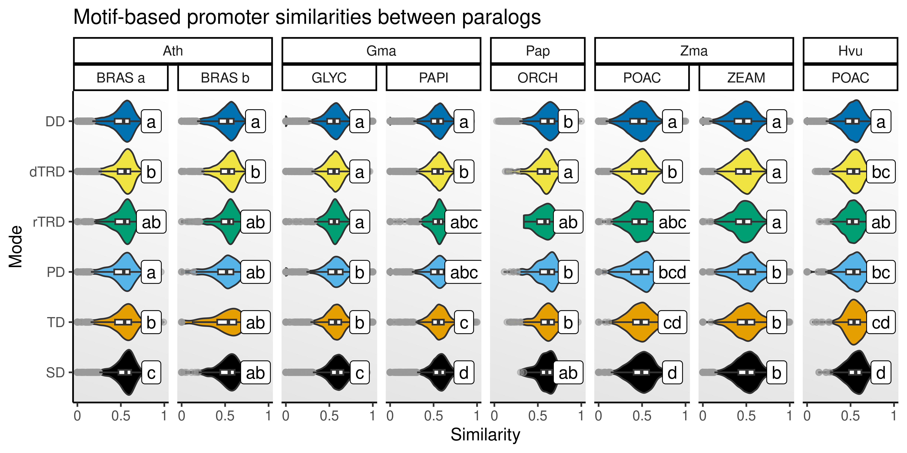

library(here)
library(Biostrings)
library(GenomicRanges)
library(monaLisa)
library(JASPAR2024)
library(TFBSTools)
library(tidyverse)
set.seed(123) # for reproducibility
options(timeout = 1e6) # to download large data files
# Load helper functions
source(here("code", "utils.R"))
# Plot background
bg <- grid::linearGradient(colorRampPalette(c("gray90", "white"))(100))
# Define color palette for duplication modes
dup_pal <- c(
SD = "#000000",
TD = "#E69F00",
PD = "#56B4E9",
rTRD = "#009E73",
dTRD = "#F0E442",
DD = "#0072B2"
)7 Motif-based promoter similarities between paralogs
Here, we will quantify similarities between promoters of paralogous genes. Our goal is to better understand how different duplication modes preserve cis-regulatory landscapes.
We will start by loading the required packages.
We will also load some required objects created in previous chapters.
# Read duplicated gene pairs with age-based group classifications
pairs_age <- readRDS(
here("products", "result_files", "pairs_by_age_group_expanded.rds")
)7.1 Obtaning promoter sequences
We will first obtain promoter sequences, hereafter defined as the genomic intervals between -1000 bp and +200 bp.
# Define paths to data files
data_list <- list(
ath = c(
"https://ftp.ebi.ac.uk/ensemblgenomes/pub/release-61/plants/fasta/arabidopsis_thaliana/dna/Arabidopsis_thaliana.TAIR10.dna_rm.toplevel.fa.gz",
"https://ftp.ebi.ac.uk/ensemblgenomes/pub/release-61/plants/gff3/arabidopsis_thaliana/Arabidopsis_thaliana.TAIR10.61.gff3.gz"
),
gma = c(
"https://ftp.ebi.ac.uk/ensemblgenomes/pub/release-61/plants/fasta/glycine_max/dna/Glycine_max.Glycine_max_v2.1.dna_rm.toplevel.fa.gz",
"https://ftp.ebi.ac.uk/ensemblgenomes/pub/release-61/plants/gff3/glycine_max/Glycine_max.Glycine_max_v2.1.61.gff3.gz"
),
pap = c(
"https://orchidstra2.abrc.sinica.edu.tw/orchidstra2/pagenome/padownload/P_aphrodite_genomic_scaffold_v1.0.fa.gz",
"https://orchidstra2.abrc.sinica.edu.tw/orchidstra2/pagenome/padownload/P_aphrodite_genomic_scaffold_v1.0_gene.gff.gz"
),
zma = c(
"https://ftp.ebi.ac.uk/ensemblgenomes/pub/release-61/plants/fasta/zea_mays/dna/Zea_mays.Zm-B73-REFERENCE-NAM-5.0.dna_rm.toplevel.fa.gz",
"https://ftp.ebi.ac.uk/ensemblgenomes/pub/release-61/plants/gff3/zea_mays/Zea_mays.Zm-B73-REFERENCE-NAM-5.0.61.gff3.gz"
),
hvu = c(
"https://ftp.ebi.ac.uk/ensemblgenomes/pub/release-61/plants/fasta/hordeum_vulgare/dna/Hordeum_vulgare.MorexV3_pseudomolecules_assembly.dna_rm.toplevel.fa.gz",
"https://ftp.ebi.ac.uk/ensemblgenomes/pub/release-61/plants/gff3/hordeum_vulgare/Hordeum_vulgare.MorexV3_pseudomolecules_assembly.61.gff3.gz"
)
)
# Get promoter sequences based on genome and annotation
prom_seqs <- lapply(seq_along(data_list), function(n) {
sp <- names(data_list)[n]
# Load genome and annotation
genome <- readDNAStringSet(data_list[[sp]][1])
names(genome) <- gsub(" .*", "", names(genome))
annot <- rtracklayer::import(data_list[[sp]][2])
# Process annotation
annot <- annot[annot$type == "gene"]
sl <- setNames(width(genome), names(genome))
sl <- sl[seqlevels(annot)]
seqlengths(annot) <- sl
## Extract promoter sequences
prom_ranges <- trim(promoters(annot, 1000, 200))
prom_seqs <- BSgenome::getSeq(genome, prom_ranges)
if(sp == "pap") {
names(prom_seqs) <- prom_ranges$ID
} else {
names(prom_seqs) <- prom_ranges$gene_id
}
## Keep only duplicated genes
sel_genes <- unique(c(pairs_age[[sp]]$dup1, pairs_age[[sp]]$dup2))
prom_seqs <- prom_seqs[sel_genes]
fpath <- tempfile(fileext = ".fa.gz")
writeXStringSet(prom_seqs, filepath = fpath)
fprom_seqs <- readDNAStringSet(fpath)
unlink(fpath)
return(fprom_seqs)
})
names(prom_seqs) <- names(data_list)7.2 Annotating promoter sequences with TFBMs
First, we will obtain non-redundant plant TFBMs from JASPAR2024 (Rauluseviciute et al. 2024).
# Retrieve data from JASPAR2024 ----
js24 <- RSQLite::dbConnect(RSQLite::SQLite(), db(JASPAR2024()))
## PWMs and PFMs ----
unopts <- list(collection = "CORE", tax_group = "plants")
pwms <- getMatrixSet(js24, opts = c(unopts, matrixtype = "PWM"))
## Metadata ----
motif_meta <- Reduce(rbind, lapply(pwms, function(x) {
df <- tryCatch(
data.frame(
id = ID(x),
name = name(x),
family = tags(x)$family,
class = matrixClass(x),
species = unname(tags(x)$species)
),
error = function(e) return(NULL)
)
return(df)
}))
## Pairwise motif comparisons
motif_comp <- read_tsv(
"https://jaspar.elixir.no/static/clustering/2024/plants/CORE/interactive_trees/pairwise_comparisons.tab", show_col_types = FALSE, skip = 1
) |>
as.data.frame() |>
mutate(
id1 = str_replace_all(`#id1`, ".*_CORE_", ""),
id1 = str_replace_all(id1, "_n.*", ""),
id2 = str_replace_all(id2, ".*_CORE_", ""),
id2 = str_replace_all(id2, "_n.*", "")
) |>
select(id1, id2, cor)
comp_mat <- motif_comp |>
igraph::graph_from_data_frame() |>
igraph::as_adjacency_matrix(attr = "cor") |>
as.matrix()
# Remove redundancy (similarity >0.9)
tf_fams <- unique(motif_meta$family)
nr_motifs <- Reduce(rbind, lapply(tf_fams, function(x) {
## Get similarity matrix with selected motifs only
sel <- motif_meta |> filter(family == x) |> pull(id)
mclusters <- setNames(rep(1, length(sel)), sel)
if(length(sel) >1) {
fmat <- comp_mat[sel, sel]
## Get clusters
mclusters <- hclust(as.dist(1 - fmat))
mclusters <- cutree(mclusters, h = 0.1)
}
df <- data.frame(
id = names(mclusters),
cluster = paste0(x, "_", mclusters),
family = x
) |>
arrange(cluster)
return(df)
})) |>
distinct(cluster, .keep_all = TRUE) |>
pull(id)
fpwms <- pwms[nr_motifs]Now, we will annotate promoters with motifs.
# Find motif hits
motif_hits <- lapply(prom_seqs, function(x) {
return(
findMotifHits(
query = fpwms,
subject = x,
min.score = "90%",
method = "matchPWM"
) |>
as.data.frame()
)
})7.3 Calculating promoter similarity between paralogs
Now that we have a data frame summarizing what TFBMs are found in promoters of all duplicated genes, we will calculate Sorensen-Dice similarities (single and multiset) between paralogs.
paralogs <- pairs_age$hvu
# Calculate single and multiset Sorensen-Dice similarities
paralogs_sim <- lapply(names(motif_hits), function(sp) {
paralogs <- pairs_age[[sp]]
ms_sdice <- lapply(seq_len(nrow(paralogs)), function(n) {
m1 <- motif_hits[[sp]] |> filter(seqnames == paralogs[n, 1]) |> pull(pwmid)
m2 <- motif_hits[[sp]] |> filter(seqnames == paralogs[n, 2]) |> pull(pwmid)
## Single Sorensen-Dice similarity
m1u <- unique(m1)
m2u <- unique(m2)
sd_single <- 2 * length(intersect(m1u, m2u)) / (length(m1u) + length(m2u))
## Multiset Sorensen-Dice similarity
tab1 <- table(m1)
tab2 <- table(m2)
common <- intersect(names(tab1), names(tab2))
int_count <- sum(pmin(tab1[common], tab2[common]))
sd_multi <- 2 * int_count / (length(m1) + length(m2))
df_sim <- data.frame(sd_single = sd_single, sd_multi = sd_multi)
return(df_sim)
}) |>
bind_rows() |>
mutate(species = sp)
paralogs_final <- cbind(paralogs, ms_sdice)
return(paralogs_final)
}) |>
bind_rows() |>
mutate(species_peak = str_c(species, peak_name, sep = "_"))Then, we will visualize a distribution of promoter similarities by duplication modes.
# Compare distros and get CLDs
cld_df <- lapply(
split(paralogs_sim, paralogs_sim$species_peak),
cld_kw_dunn, value = "sd_multi"
) |>
bind_rows(.id = "species_peak") |>
separate_wider_delim(species_peak, "_", names = c("species", "peak_name")) |>
mutate(
type = factor(Group, levels = names(dup_pal)),
species = str_to_title(species),
species = factor(species, levels = c("Ath", "Gma", "Pap", "Zma", "Hvu"))
)
# Plot violin + boxplots with CLDs
p_prom_sim <- paralogs_sim |>
mutate(
species = str_to_title(species),
species = factor(species, levels = c("Ath", "Gma", "Pap", "Zma", "Hvu"))
) |>
ggplot(aes(x = sd_multi, y = type)) +
geom_violin(aes(fill = type)) +
scale_fill_manual(values = dup_pal) +
geom_boxplot(width = 0.1, outlier.color = "gray60", outlier.alpha = 0.5) +
geom_label(
data = cld_df,
aes(x = 0.85, y = type, label = Letter)
) +
ggh4x::facet_nested(
cols = vars(species, peak_name), space = "free"
) +
scale_x_continuous(
limits = c(0, 1), breaks = c(0, 0.5, 1), labels = c("0", "0.5", "1")
) +
theme_classic() +
theme(
panel.background = element_rect(fill = bg), legend.position = "none"
) +
labs(
title = "Motif-based promoter similarities between paralogs",
x = "Similarity", y = "Mode"
)
p_prom_sim
The figure shows that SD, TD, and PD duplicates display higher motif similarities, as expected. However, it’s also important to note that promoters of dTRD duplicates are often more similar than promoters of DD and rTRD duplicates, indicating that gene duplication through DNA transpositions can preserve cis-regulatory landscapes to some extent (possibly by copying genes and a fraction of the promoter sequences), although not at the same level of SD and TD.
Saving objects
Finally, we will save important objects to reuse later.
# Objects
## List of data frames with motif hits in promoters
saveRDS(
motif_hits, compress = "xz",
file = here("products", "result_files", "motif_hits_promoters.rds")
)
## Data frame of TFBM-based promoter similarities
saveRDS(
paralogs_sim, compress = "xz",
file = here("products", "result_files", "promoter_similarities.rds")
)
# Plots
## Distribution of promoter similarities
saveRDS(
p_prom_sim, compress = "xz",
file = here("products", "plots", "promoter_similarity_distros.rds")
)Session info
This document was created under the following conditions:
─ Session info ───────────────────────────────────────────────────────────────
setting value
version R version 4.4.1 (2024-06-14)
os Ubuntu 22.04.4 LTS
system x86_64, linux-gnu
ui X11
language (EN)
collate en_US.UTF-8
ctype en_US.UTF-8
tz Europe/Brussels
date 2025-08-12
pandoc 3.2 @ /usr/lib/rstudio/resources/app/bin/quarto/bin/tools/x86_64/ (via rmarkdown)
─ Packages ───────────────────────────────────────────────────────────────────
package * version date (UTC) lib source
abind 1.4-5 2016-07-21 [1] CRAN (R 4.4.1)
annotate 1.82.0 2024-04-30 [1] Bioconductor 3.19 (R 4.4.1)
AnnotationDbi 1.66.0 2024-05-01 [1] Bioconductor 3.19 (R 4.4.1)
backports 1.5.0 2024-05-23 [1] CRAN (R 4.4.1)
beeswarm 0.4.0 2021-06-01 [1] CRAN (R 4.4.1)
Biobase 2.64.0 2024-04-30 [1] Bioconductor 3.19 (R 4.4.1)
BiocFileCache * 2.12.0 2024-04-30 [1] Bioconductor 3.19 (R 4.4.1)
BiocGenerics * 0.50.0 2024-04-30 [1] Bioconductor 3.19 (R 4.4.1)
BiocIO 1.14.0 2024-04-30 [1] Bioconductor 3.19 (R 4.4.1)
BiocParallel 1.38.0 2024-04-30 [1] Bioconductor 3.19 (R 4.4.1)
Biostrings * 2.72.1 2024-06-02 [1] Bioconductor 3.19 (R 4.4.1)
bit 4.0.5 2022-11-15 [1] CRAN (R 4.4.1)
bit64 4.0.5 2020-08-30 [1] CRAN (R 4.4.1)
bitops 1.0-7 2021-04-24 [1] CRAN (R 4.4.1)
blob 1.2.4 2023-03-17 [1] CRAN (R 4.4.1)
broom 1.0.6 2024-05-17 [1] CRAN (R 4.4.1)
BSgenome 1.72.0 2024-04-30 [1] Bioconductor 3.19 (R 4.4.1)
cachem 1.1.0 2024-05-16 [1] CRAN (R 4.4.1)
car 3.1-2 2023-03-30 [1] CRAN (R 4.4.1)
carData 3.0-5 2022-01-06 [1] CRAN (R 4.4.1)
caTools 1.18.2 2021-03-28 [1] CRAN (R 4.4.1)
circlize 0.4.16 2024-02-20 [1] CRAN (R 4.4.1)
cli 3.6.3 2024-06-21 [1] CRAN (R 4.4.1)
clue 0.3-65 2023-09-23 [1] CRAN (R 4.4.1)
cluster 2.1.6 2023-12-01 [1] CRAN (R 4.4.1)
CNEr 1.40.0 2024-04-30 [1] Bioconductor 3.19 (R 4.4.1)
codetools 0.2-20 2024-03-31 [1] CRAN (R 4.4.1)
colorspace 2.1-0 2023-01-23 [1] CRAN (R 4.4.1)
ComplexHeatmap 2.21.1 2024-09-24 [1] Github (jokergoo/ComplexHeatmap@0d273cd)
crayon 1.5.3 2024-06-20 [1] CRAN (R 4.4.1)
curl 5.2.1 2024-03-01 [1] CRAN (R 4.4.1)
DBI 1.2.3 2024-06-02 [1] CRAN (R 4.4.1)
dbplyr * 2.5.0 2024-03-19 [1] CRAN (R 4.4.1)
DelayedArray 0.30.1 2024-05-07 [1] Bioconductor 3.19 (R 4.4.1)
digest 0.6.36 2024-06-23 [1] CRAN (R 4.4.1)
DirichletMultinomial 1.46.0 2024-04-30 [1] Bioconductor 3.19 (R 4.4.1)
doParallel 1.0.17 2022-02-07 [1] CRAN (R 4.4.1)
dplyr * 1.1.4 2023-11-17 [1] CRAN (R 4.4.1)
evaluate 0.24.0 2024-06-10 [1] CRAN (R 4.4.1)
farver 2.1.2 2024-05-13 [1] CRAN (R 4.4.1)
fastmap 1.2.0 2024-05-15 [1] CRAN (R 4.4.1)
filelock 1.0.3 2023-12-11 [1] CRAN (R 4.4.1)
forcats * 1.0.0 2023-01-29 [1] CRAN (R 4.4.1)
foreach 1.5.2 2022-02-02 [1] CRAN (R 4.4.1)
generics 0.1.3 2022-07-05 [1] CRAN (R 4.4.1)
GenomeInfoDb * 1.40.1 2024-05-24 [1] Bioconductor 3.19 (R 4.4.1)
GenomeInfoDbData 1.2.12 2024-07-24 [1] Bioconductor
GenomicAlignments 1.40.0 2024-04-30 [1] Bioconductor 3.19 (R 4.4.1)
GenomicRanges * 1.56.1 2024-06-12 [1] Bioconductor 3.19 (R 4.4.1)
GetoptLong 1.0.5 2020-12-15 [1] CRAN (R 4.4.1)
ggbeeswarm 0.7.2 2023-04-29 [1] CRAN (R 4.4.1)
ggh4x 0.2.8 2024-01-23 [1] CRAN (R 4.4.1)
ggplot2 * 3.5.1 2024-04-23 [1] CRAN (R 4.4.1)
ggpubr 0.6.0 2023-02-10 [1] CRAN (R 4.4.1)
ggsignif 0.6.4.9000 2024-12-12 [1] Github (const-ae/ggsignif@705495f)
glmnet 4.1-9 2025-06-02 [1] CRAN (R 4.4.1)
GlobalOptions 0.1.2 2020-06-10 [1] CRAN (R 4.4.1)
glue 1.8.0 2024-09-30 [1] https://cran.r-universe.dev (R 4.4.1)
GO.db 3.19.1 2024-07-24 [1] Bioconductor
gtable 0.3.5 2024-04-22 [1] CRAN (R 4.4.1)
gtools 3.9.5 2023-11-20 [1] CRAN (R 4.4.1)
here * 1.0.1 2020-12-13 [1] CRAN (R 4.4.1)
hms 1.1.3 2023-03-21 [1] CRAN (R 4.4.1)
htmltools 0.5.8.1 2024-04-04 [1] CRAN (R 4.4.1)
htmlwidgets 1.6.4 2023-12-06 [1] CRAN (R 4.4.1)
httr 1.4.7 2023-08-15 [1] CRAN (R 4.4.1)
IRanges * 2.38.1 2024-07-03 [1] Bioconductor 3.19 (R 4.4.1)
iterators 1.0.14 2022-02-05 [1] CRAN (R 4.4.1)
JASPAR2024 * 0.99.6 2023-10-18 [1] Bioconductor
jsonlite 1.8.8 2023-12-04 [1] CRAN (R 4.4.1)
KEGGREST 1.44.1 2024-06-19 [1] Bioconductor 3.19 (R 4.4.1)
knitr 1.48 2024-07-07 [1] CRAN (R 4.4.1)
lattice 0.22-6 2024-03-20 [1] CRAN (R 4.4.1)
lifecycle 1.0.4 2023-11-07 [1] CRAN (R 4.4.1)
lubridate * 1.9.3 2023-09-27 [1] CRAN (R 4.4.1)
magrittr 2.0.3 2022-03-30 [1] CRAN (R 4.4.1)
Matrix 1.7-0 2024-04-26 [1] CRAN (R 4.4.1)
MatrixGenerics 1.16.0 2024-04-30 [1] Bioconductor 3.19 (R 4.4.1)
matrixStats 1.3.0 2024-04-11 [1] CRAN (R 4.4.1)
memoise 2.0.1 2021-11-26 [1] CRAN (R 4.4.1)
monaLisa * 1.10.1 2024-07-10 [1] Bioconductor 3.19 (R 4.4.1)
munsell 0.5.1 2024-04-01 [1] CRAN (R 4.4.1)
patchwork 1.3.0 2024-09-16 [1] CRAN (R 4.4.1)
pillar 1.10.2 2025-04-05 [1] https://cran.r-universe.dev (R 4.4.1)
pkgconfig 2.0.3 2019-09-22 [1] CRAN (R 4.4.1)
plyr 1.8.9 2023-10-02 [1] CRAN (R 4.4.1)
png 0.1-8 2022-11-29 [1] CRAN (R 4.4.1)
poweRlaw 1.0.0 2025-02-03 [1] CRAN (R 4.4.1)
purrr * 1.0.2 2023-08-10 [1] CRAN (R 4.4.1)
pwalign 1.0.0 2024-04-30 [1] Bioconductor 3.19 (R 4.4.1)
R.methodsS3 1.8.2 2022-06-13 [1] CRAN (R 4.4.1)
R.oo 1.26.0 2024-01-24 [1] CRAN (R 4.4.1)
R.utils 2.12.3 2023-11-18 [1] CRAN (R 4.4.1)
R6 2.5.1 2021-08-19 [1] CRAN (R 4.4.1)
RColorBrewer 1.1-3 2022-04-03 [1] CRAN (R 4.4.1)
Rcpp 1.0.13 2024-07-17 [1] CRAN (R 4.4.1)
RCurl 1.98-1.16 2024-07-11 [1] CRAN (R 4.4.1)
readr * 2.1.5 2024-01-10 [1] CRAN (R 4.4.1)
reshape2 1.4.4 2020-04-09 [1] CRAN (R 4.4.1)
restfulr 0.0.15 2022-06-16 [1] CRAN (R 4.4.1)
rjson 0.2.21 2022-01-09 [1] CRAN (R 4.4.1)
rlang 1.1.4 2024-06-04 [1] CRAN (R 4.4.1)
rmarkdown 2.27 2024-05-17 [1] CRAN (R 4.4.1)
rprojroot 2.0.4 2023-11-05 [1] CRAN (R 4.4.1)
Rsamtools 2.20.0 2024-04-30 [1] Bioconductor 3.19 (R 4.4.1)
RSQLite 2.3.7 2024-05-27 [1] CRAN (R 4.4.1)
rstatix 0.7.2 2023-02-01 [1] CRAN (R 4.4.1)
rstudioapi 0.16.0 2024-03-24 [1] CRAN (R 4.4.1)
rtracklayer 1.64.0 2024-04-30 [1] Bioconductor 3.19 (R 4.4.1)
S4Arrays 1.4.1 2024-05-20 [1] Bioconductor 3.19 (R 4.4.1)
S4Vectors * 0.42.1 2024-07-03 [1] Bioconductor 3.19 (R 4.4.1)
scales 1.3.0 2023-11-28 [1] CRAN (R 4.4.1)
seqLogo 1.70.0 2024-04-30 [1] Bioconductor 3.19 (R 4.4.1)
sessioninfo 1.2.2 2021-12-06 [1] CRAN (R 4.4.1)
shape 1.4.6.1 2024-02-23 [1] CRAN (R 4.4.1)
sm 2.2-6.0 2024-02-17 [1] CRAN (R 4.4.1)
SparseArray 1.4.8 2024-05-24 [1] Bioconductor 3.19 (R 4.4.1)
stabs 0.6-4 2021-01-29 [1] CRAN (R 4.4.1)
stringi 1.8.4 2024-05-06 [1] CRAN (R 4.4.1)
stringr * 1.5.1 2023-11-14 [1] CRAN (R 4.4.1)
SummarizedExperiment 1.34.0 2024-05-01 [1] Bioconductor 3.19 (R 4.4.1)
survival 3.7-0 2024-06-05 [1] CRAN (R 4.4.1)
TFBSTools * 1.42.0 2024-05-01 [1] Bioconductor 3.19 (R 4.4.1)
TFMPvalue 0.0.9 2022-10-21 [1] CRAN (R 4.4.1)
tibble * 3.2.1 2023-03-20 [1] CRAN (R 4.4.1)
tidyr * 1.3.1 2024-01-24 [1] CRAN (R 4.4.1)
tidyselect 1.2.1 2024-03-11 [1] CRAN (R 4.4.1)
tidyverse * 2.0.0 2023-02-22 [1] CRAN (R 4.4.1)
timechange 0.3.0 2024-01-18 [1] CRAN (R 4.4.1)
tzdb 0.4.0 2023-05-12 [1] CRAN (R 4.4.1)
UCSC.utils 1.0.0 2024-04-30 [1] Bioconductor 3.19 (R 4.4.1)
vctrs 0.6.5 2023-12-01 [1] CRAN (R 4.4.1)
vioplot 0.5.1 2025-02-23 [1] CRAN (R 4.4.1)
vipor 0.4.7 2023-12-18 [1] CRAN (R 4.4.1)
withr 3.0.0 2024-01-16 [1] CRAN (R 4.4.1)
xfun 0.51 2025-02-19 [1] CRAN (R 4.4.1)
XML 3.99-0.17 2024-06-25 [1] CRAN (R 4.4.1)
xtable 1.8-4 2019-04-21 [1] CRAN (R 4.4.1)
XVector * 0.44.0 2024-04-30 [1] Bioconductor 3.19 (R 4.4.1)
yaml 2.3.9 2024-07-05 [1] CRAN (R 4.4.1)
zlibbioc 1.50.0 2024-04-30 [1] Bioconductor 3.19 (R 4.4.1)
zoo 1.8-12 2023-04-13 [1] CRAN (R 4.4.1)
[1] /home/faalm/R/x86_64-pc-linux-gnu-library/4.4
[2] /usr/local/lib/R/site-library
[3] /usr/lib/R/site-library
[4] /usr/lib/R/library
──────────────────────────────────────────────────────────────────────────────References
Rauluseviciute, Ieva, Rafael Riudavets-Puig, Romain Blanc-Mathieu, Jaime A Castro-Mondragon, Katalin Ferenc, Vipin Kumar, Roza Berhanu Lemma, et al. 2024. “JASPAR 2024: 20th Anniversary of the Open-Access Database of Transcription Factor Binding Profiles.” Nucleic Acids Research 52 (D1): D174–82.